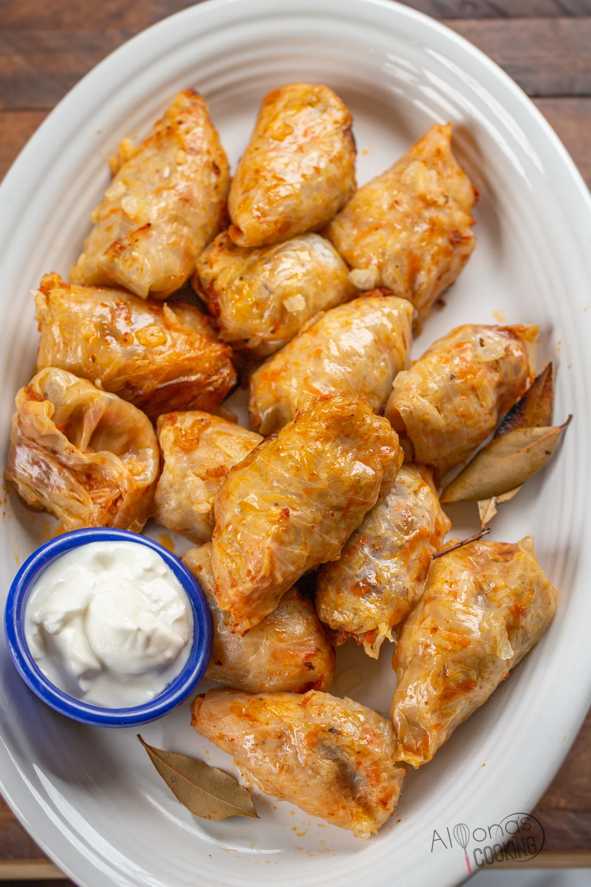

Sarmale

Descriere
Reteta de sarmale este indispensabila pentru orice sarbatoare, dar mai ales pentru Craciun si Paste. In copilarie bunica mea facea cele mai bune sarmale din lume. Mari cat pumnul, aromate si extrem de gustoase.
Ingrediente
- 1 kg carne tocata de vita (500 g carne mai grasa, 500 g carne macra)
- 200 g orez
- 5 linguri ulei
- 4 cepe medii tocate marunt
- 2 linguri pasta de tomate
- 1 litru suc de rosii
- frunze varza acra
- piper boabe
- foi de dafin
- cimbru
- piper
- boia
- sare
Mod de preparare
- Varza se deface în foi, se spală, se lasă la desărat şi dezacrit, dacă e nevoie, apoi se curăţă de cotoare şi se aşază foile care arată cel mai bine pe un platou. Foile de varză care nu sunt potrivite pentru umplut, se toacă fideluţă.
- Între timp, ceapa tocată mărunt se căleşte puţin într-o tigaie încinsă cu ulei, se adaugă orezul spălat bine în apă caldă şi scurs, se călesc împreună pentru 1-2 minute amestecând continuu. Se adaugă apoi 2-3 linguri pastă de tomate şi se stinge totul cu 1 pahar de apă. Acum se lasă să fiarbă descoperit până începe să se umfle orezul, iar sosul începe să scadeă. Se lasă la răcit, iar apoi această compoziție se amestecă bine cu carnea tocată, sare, piper, cimbru, boia dulce.
- Se umple fiecare foaie de varză cu câte o linguriţă de compoziţie şi se rulează uşor sarmalele, astfel încât să nu se desfacă la fiert.
- Varza tocată mărunt se amestecă bine cu o lingură ulei, cu restul de pastă de tomate şi condimentele.
- Într-o cratiţă cu fundul mai gros, se aşază mai întâi un strat de varză tocată, apoi se aranjează sarmalele în straturi, lăsând la mijloc un gol circular, care se umple cu varză tocată.
- Deasupra se presară varză tocată. Se toarnă 2-3 pahare cu apă încălzită, se acoperă cratiţa cu un capac potrivit şi se pun la fiert la foc mic. Sarmalele în foi de varză murată se lasă câteva ore, răsucind din când în când cratiţa, ca să nu se prindă sarmalele de fund şi să se afume.
- Când sunt fierte, sarmalele se dau la cuptor să se rumenească frumos.
Inapoi la cuprins